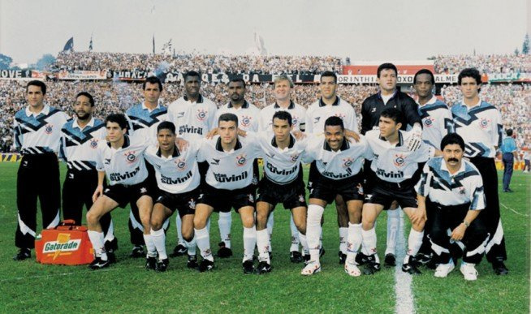
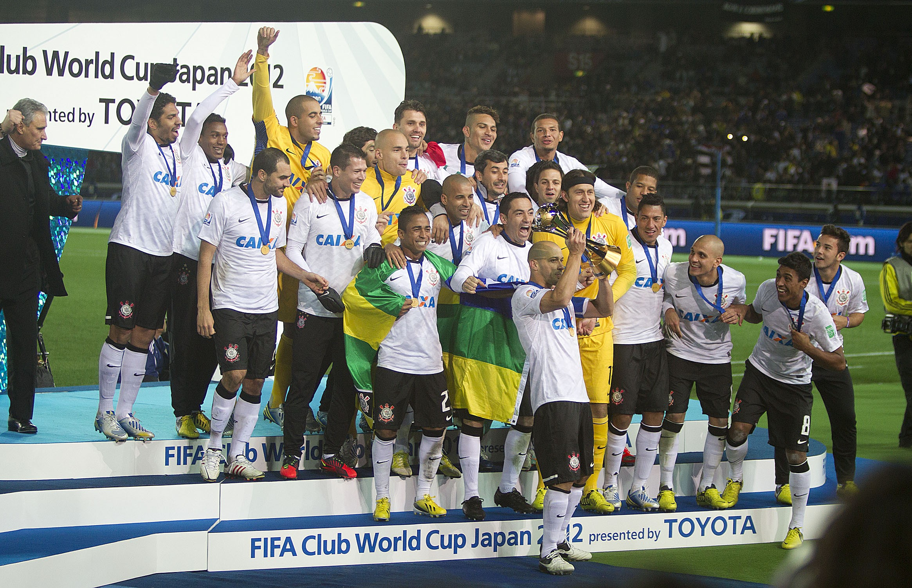

A HISTÓRIA DO CORINTHIANS
Fundado em 1910 no bairro do Bom Retiro, em São Paulo, o Sport Club Corinthians Paulista nasceu da paixão do povo pelo futebol. Criado por operários, o clube rapidamente se tornou um dos maiores e mais populares do Brasil, carregando a força da “Fiel Torcida” em cada conquista. Ao longo de sua história, o Corinthians conquistou títulos históricos como Libertadores, Mundial de Clubes, Campeonatos Brasileiros e Paulistas, eternizando ídolos e momentos marcantes no futebol.
LINHA DO TEMPO DO TIMÃO:
1910
Fundação
1977
Fim do jejum Paulista
1990
Primeiro Título Brasileiro
1995
Primeiro Copa do Brasil
2000
Primeiro Mundial de Clubes
2012
Campeão da Libertadores
2012
Segundo Mundial de Clubes
Momentos Marcantes

Primeira Copa do Brasil - 1995

Primeiro Campeonato Mundial do Corinthians - 2000

Primeira Libertadores do Corinthians - 2012

Segundo Mundial de Clubes do Corinthians - 2012